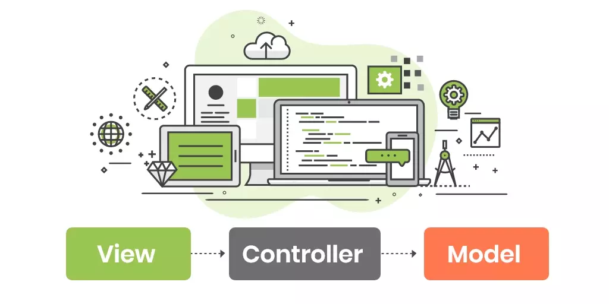

Introdução
MVC (Model-View-Controller) é um padrão de arquitetura de software amplamente utilizado no desenvolvimento de aplicações, especialmente em sistemas que exigem interação com o usuário e manipulação de dados. O MVC organiza o código de forma estruturada e facilita a manutenção e escalabilidade do sistema, separando responsabilidades em três componentes principais.
Os Três Componentes do MVC
Model (Modelo)
O Model é a parte responsável pela lógica de negócios e acesso aos dados. Ele representa os dados da aplicação e as regras de como esses dados podem ser manipulados.

View (Visão)
A View é a interface do usuário. Ela é responsável por apresentar os dados ao usuário e fornecer a interface com a qual o usuário interage.
Controller (Controlador)
O Controller é o intermediário entre o Model e a View. Ele recebe as ações do usuário na interface e decide como manipular as informações, interagindo com o Model e atualizando a View.
Fluxo de Funcionamento do MVC
O usuário interage com a View, por exemplo, preenchendo um formulário de cadastro. O Controller recebe a ação do usuário e decide o que fazer com os dados (validar, salvar, etc.). O Controller chama o Model para manipular os dados (inserir no banco, buscar informações, etc.). O Model processa os dados e retorna ao Controller. O Controller então atualiza a View com as informações mais recentes, como uma mensagem de confirmação ou uma página de erro.
Vantagens do Padrão MVC
- Separação de responsabilidades: Ao dividir a aplicação em três componentes distintos (Model, View, Controller), fica mais fácil organizar o código, facilitando a manutenção e a colaboração entre desenvolvedores.
- Facilidade de manutenção: Alterações em um componente (por exemplo, a interface de usuário) podem ser feitas sem afetar diretamente os outros componentes (Model ou Controller), permitindo que as modificações sejam mais rápidas e menos propensas a erros.
- Escalabilidade: O padrão MVC facilita a expansão de funcionalidades, já que novos recursos podem ser adicionados sem grandes impactos nos componentes existentes.
- Testabilidade: Cada componente do MVC pode ser testado isoladamente, o que facilita a criação de testes automatizados.
Exemplo Prático
Em um sistema de cadastro de usuários:
- Model: Representa a tabela de usuários no banco de dados, contém métodos como criarUsuario(), atualizarUsuario(), buscarUsuarios().
- View: Apresenta um formulário HTML para cadastro de usuários, uma tabela que lista os usuários cadastrados.
- Controller: Recebe o envio do formulário de cadastro, valida os dados, chama o Model para salvar os dados no banco e então retorna uma resposta para a View (como uma página de confirmação ou erro).
Exemplo de codigo


Conclusão
O padrão MVC é uma forma eficiente e organizada de estruturar o código de uma aplicação, facilitando o desenvolvimento, manutenção e escalabilidade. Ele ajuda a separar as responsabilidades da aplicação em três camadas distintas, garantindo que o código seja mais modular, limpo e fácil de testar. Entender e aplicar o MVC é essencial para qualquer desenvolvedor que trabalhe com aplicações de software, especialmente na web.